<!DOCTYPE html>
<html lang="en">
<head>
    <meta charset="UTF-8">
    <meta name="viewport" content="width=device-width, user-scalable=no, initial-scale=1.0, maximum-scale=1.0, minimum-scale=1.0">
    <link rel="stylesheet" type="text/css" href="../css/estilos.css">
    <link rel="preconnect" href="https://fonts.gstatic.com">
    <link href="https://fonts.googleapis.com/css2?family=Source+Sans+Pro&display=swap" rel="stylesheet">
    <link rel="shortcut icon" href="../imgs/favicon.jpg"/>
    <title>Dinocysts</title>
    <script>
        
    </script>
</head>
<body id="global">
    <div id="contenedor">
        <div id="seccion_superior">
            <div id="barra">
                <div id="barra_iconos">
                    <ul>
                        <a href="https://www.facebook.com/alvarado.andree.f"><li></li></a>
                        <a href="https://www.linkedin.com/in/andreealvarado/"><li></li></a>
                    </ul>
                </div>
                <div id="barra_palabras">
                    <ul>
                        <li><a href="../index.html"></li>
                        <li><a href="#">NEWS</a></li>    
                        <li><a href="../publicaciones.html">PUBLICATIONS</a></li>    
                        <li><a href="../nosotros.html">ABOUT US</a></li>    
                        <li><a href="../contacto.html">CONTACT</a></li>
                    </ul>
                </div>
            </div>
        </div>    
        <div id="seccion_inferior">
            <div id="contenido">
                <div id="lista">
                    <p><strong>CYSTS LIST</strong></p></br>
                    <ul>
                        <li><a class="lista_quiste" href="achomosphaera_andalousiensis.html">Achomosphaera andalousiensis</a></li>
                        <li><a class="lista_quiste" href="alexandrium_catenella.html">Alexandrium catenella</a></li>
                        <li><a class="lista_quiste" href="alexandrium_kutnerae.html">Alexandrium kutnerae</a></li>
                        <li><a class="lista_quiste" href="alexandrium_margalefi.html">Alexandrium margalefi</a></li>
                        <li><a class="lista_quiste" href="alexandrium_minutum.html">Alexandrium minutum</a></li>
                        <li><a class="lista_quiste" href="alexandrium_peruvianum.html">Alexandrium peruvianum</a></li>
                        <li><a class="lista_quiste" href="alexandrium_pseudogoniaulax.html">Alexandrium pseudogoniaulax</a></li>
                        <li><a class="lista_quiste" href="alexandrium_tamarense.html">Alexandrium tamarense</a></li>
                        <li><a class="lista_quiste" href="alexandrium_taylori.html">Alexandrium taylori</a></li>
                        <li><a class="lista_quiste" href="alexandrium_spp.html">Alexandrium spp.</a></li>
                        <li><a class="lista_quiste" href="archaeperidinium_bailongense.html">Archaeperidinium bailongense, cyst of</a></li>
                        <li><a class="lista_quiste" href="archaeperidinium_constrictum.html">Archaeperidinium constrictum, cyst of</a></li>
                        <li><a class="lista_quiste" href="archaeperidinium_minutum.html">Archaeperidinium minutum, cyst of</a></li>
                        <li><a class="lista_quiste" href="archaeperidinium_monospinum.html">Archaeperidinium monospinum, cyst of</a></li>
                        <li><a class="lista_quiste" href="archaeperidinium_saanichi.html">Archaeperidinium saanichi, cyst of</a></li>
                        <li><a class="lista_quiste" href="archaeperidinium_sp.html">Archaeperidinium sp., cyst of</a></li>
                        <li><a class="lista_quiste" href="ataxiodinium_choane.html">Ataxiodinium choane</a></li>
                        <li><a class="lista_quiste" href="ataxiodinium_confussum.html">Ataxiodinium confussum</a></li>
                        <li><a class="lista_quiste" href="ataxiodinium_zevenboomii.html">Ataxiodinium zevenboomii</a></li>
                        <li><a class="lista_quiste" href="ataxiodinium_sp.html">Ataxiodinium sp.</a></li>
                        <li><a class="lista_quiste" href="atlanticodinium_striaticonulum.html">Atlanticodinium striaticonulum</a></li>
                        <li><a class="lista_quiste" href="barrufeta_resplendens.html">Barrufeta resplendens, cyst of</a></li>
                        <li><a class="lista_quiste" href="biecheleria_baltica.html">Biecheleria baltica, cyst of</a></li>
                        <li><a class="lista_quiste" href="biecheleria_cincta.html">Biecheleria cincta, cyst of</a></li>
                        <li><a class="lista_quiste" href="biecheleria_sp.html">Biecheleria sp., cyst of</a></li>
                        <li><a class="lista_quiste" href="bitectatodinium_spongium.html">Bitectatodinium spongium</a></li>
                        <li><a class="lista_quiste" href="bitectatodinium_tepikiense.html">Bitectatodinium tepikiense</a></li>
                        <li><a class="lista_quiste" href="bitectatodinium_sp.html">Bitectatodinium sp.</a></li>
                        <li><a class="lista_quiste" href="boreadinium_breve.html">Boreadinium breve, cyst of</a></li>
                        <li><a class="lista_quiste" href="brigantedinium_assymmetricum.html">Brigantedinium assymmetricum</a></li>
                        <li><a class="lista_quiste" href="brigantedinium_auranteum.html">Brigantedinium auranteum</a></li>
                        <li><a class="lista_quiste" href="brigantedinium_cariacoense.html">Brigantedinium cariacoense</a></li>
                        <li><a class="lista_quiste" href="brigantedinium_majusculum.html">Brigantedinium majusculum</a></li>
                        <li><a class="lista_quiste" href="brigantedinium_simplex.html">Brigantedinium simplex</a></li>
                        <li><a class="lista_quiste" href="brigantedinium_sp.html">Brigantedinium sp.</a></li>
                        <li><a class="lista_quiste" href="capisocysta_lata.html">Capisocysta lata</a></li>
                        <li><a class="lista_quiste" href="caspidinium_rugosum.html">Caspidinium rugosum</a></li>
                        <li><a class="lista_quiste" href="cristadinium_striatiserratum.html">Cristadinium striatiserratum</a></li>
                        <li><a class="lista_quiste" href="cryodinium_matsuokai.html">Cryodinium matsuokai</a></li>
                        <li><a class="lista_quiste" href="cryodinium_meridianum.html">Cryodinium meridianum</a></li>
                        <li><a class="lista_quiste" href="cryodinium_sp.html">Cryodinium sp.</a></li>
                        <li><a class="lista_quiste" href="dalella_chathamensis.html">Dalella chathamensis</a></li>
                        <li><a class="lista_quiste" href="dapsilidinium_pastielsii.html">Dapsilidinium pastielsii</a></li>
                        <li><a class="lista_quiste" href="desotodinium_wrennii.html">Desotodinium wrennii</a></li>
                        <li><a class="lista_quiste" href="diplopelta_globula.html">Diplopelta globula, cyst of</a></li>
                        <li><a class="lista_quiste" href="diplopelta_symmetrica.html">Diplopelta symmetrica, cyst of</a></li>
                        <li><a class="lista_quiste" href="diplopsalis_latipeltata.html">Diplopsalias latipeltata</a></li>
                        <li><a class="lista_quiste" href="diplopsalis_lenticula.html">Diplopsalias lenticula</a></li>
                        <li><a class="lista_quiste" href="diplopsalis_ovata.html">Diplopsalias ovata</a></li>
                        <li><a class="lista_quiste" href="dubridinium_caperatum.html">Dubridinium caperatum, cyst of</a></li>
                        <li><a class="lista_quiste" href="dubridinium_cassiculum.html">Dubridinium cassiculum, cyst of</a></li>
                        <li><a class="lista_quiste" href="dubridinium_cavatum.html">Dubridinium cavatum, cyst of</a></li>
                        <li><a class="lista_quiste" href="dubridinium_ulsterum.html">Dubridinium ulsterum, cyst of</a></li>
                        <li><a class="lista_quiste" href="dubridinium_spp.html">Dubridinium spp., cyst of</a></li>
                        <li><a class="lista_quiste" href="echinidinium_aculeatum.html">Echinidinium aculeatum</a></li>
                        <li><a class="lista_quiste" href="echinidinium_bispiniformum.html">Echinidinium bispiniformum</a></li>
                        <li><a class="lista_quiste" href="echinidinium_delicatum.html">Echinidinium delicatum</a></li>
                        <li><a class="lista_quiste" href="echinidinium_karaense.html">Echinidinium karaense</a></li>
                        <li><a class="lista_quiste" href="echinidinium_granulatum.html">Echinidinium granulatum</a></li>
                        <li><a class="lista_quiste" href="echinidinium_sleipnerensis.html">Echinidinium sleipnerensis</a></li>
                        <li><a class="lista_quiste" href="echinidinium_transparantum.html">Echinidinium transparantum</a></li>
                        <li><a class="lista_quiste" href="echinidinium_zonneveldiae.html">Echinidinium zonneveldiae</a></li>
                        <li><a class="lista_quiste" href="gonyaulax_baltica.html">Gonyaulax baltica, cyst of</a></li>
                        <li><a class="lista_quiste" href="gymnodinium_catenatum.html">Gymnodinium catenatum, cyst of</a></li>
                        <li><a class="lista_quiste" href="gymnodinium_inusitatum.html">Gymnodinium inusitatum, cyst of</a></li>
                        <li><a class="lista_quiste" href="gymnodinium_microreticulatum.html">Gymnodinium microreticulatum, cyst of</a></li>
                        <li><a class="lista_quiste" href="gymnodinium_nolerii.html">Gymnodinium nolerii, cyst of</a></li>
                        <li><a class="lista_quiste" href="gymnodinium_trapeziforme.html">Gymnodinium trapeziforme, cyst of</a></li>
                        <li><a class="lista_quiste" href="huia_caspica.html">Huia caspica, cyst of</a></li>
                        <li><a class="lista_quiste" href="impagidinium_aculeatum.html">Impagidinium aculeatum</a></li>
                        <li><a class="lista_quiste" href="impagidinium_caspienense.html">Impagidinium caspienense</a></li>
                        <li><a class="lista_quiste" href="impagidinium_japonicum.html">Impagidinium japonicum</a></li>
                        <li><a class="lista_quiste" href="impagidinium_pallidum.html">Impagidinium pallidum</a></li>
                        <li><a class="lista_quiste" href="impagidinium_paradoxum.html">Impagidinium paradoxum</a></li>
                        <li><a class="lista_quiste" href="impagidinium_patulum.html">Impagidinium patulum</a></li>
                        <li><a class="lista_quiste" href="impagidinium_plicatum.html">Impagidinium plicatum</a></li>
                        <li><a class="lista_quiste" href="impagidinium_sphaericum.html">Impagidinium sphaericum</a></li>
                        <li><a class="lista_quiste" href="impagidinium_strialatum.html">Impagidinium strialatum</a></li>
                        <li><a class="lista_quiste" href="impagidinium_variaseptum.html">Impagidinium variaseptum</a></li>
                        <li><a class="lista_quiste" href="impagidinium_velorum.html">Impagidinium velorum</a></li>
                        <li><a class="lista_quiste" href="islandinium_brevispinosum.html">Islandinium brevispinosum</a></li>
                        <li><a class="lista_quiste" href="islandinium_cezare.html">Islandinium? cezare</a></li>
                        <li><a class="lista_quiste" href="islandinium_minutum.html">Islandinium minutum</a></li>
                        <li><a class="lista_quiste" href="lebouraia_pusilla.html">Lebouraia pusilla, cyst of</a></li>
                        <li><a class="lista_quiste" href="leipokatium_invisitatum.html">Leipokatium invisitatum</a></li>
                        <li><a class="lista_quiste" href="lejeunecysta_acuminate.html">Lejeunecysta acuminate</a></li>
                        <li><a class="lista_quiste" href="lejeunecysta_adeliensis.html">Lejeunecysta adeliensis</a></li>
                        <li><a class="lista_quiste" href="lejeunecysta_attenuata.html">Lejeunecysta attenuata</a></li>
                        <li><a class="lista_quiste" href="lejeunecysta_beinenensis.html">Lejeunecysta beinenensis</a></li>
                        <li><a class="lista_quiste" href="lejeunecysta_catomus.html">Lejeunecysta catomus</a></li>
                        <li><a class="lista_quiste" href="lejeunecysta_communis.html">Lejeunecysta communis</a></li>
                        <li><a class="lista_quiste" href="lejeunecysta_cowiei.html">Lejeunecysta cowiei</a></li>
                        <li><a class="lista_quiste" href="lejeunecysta_epidoma.html">Lejeunecysta epidoma</a></li>
                        <li><a class="lista_quiste" href="lejeunecysta_fallax.html">Lejeunecysta fallax</a></li>
                        <li><a class="lista_quiste" href="lejeunecysta_globosa.html">Lejeunecysta globosa</a></li>
                        <li><a class="lista_quiste" href="lejeunecysta_granosa.html">Lejeunecysta granosa</a></li>
                        <li><a class="lista_quiste" href="lejeunecysta_hyalina.html">Lejeunecysta hyalina</a></li>
                        <li><a class="lista_quiste" href="lejeunecysta_katatonos.html">Lejeunecysta katatonos</a></li>
                        <li><a class="lista_quiste" href="lejeunecysta_lata.html">Lejeunecysta lata</a></li>
                        <li><a class="lista_quiste" href="lejeunecysta_marieae.html">Lejeunecysta marieae</a></li>
                        <li><a class="lista_quiste" href="lejeunecysta_oliva.html">Lejeunecysta oliva</a></li>
                        <li><a class="lista_quiste" href="lejeunecysta_paratenella.html">Lejeunecysta paratenella</a></li>
                        <li><a class="lista_quiste" href="lejeunecysta_pulchra.html">Lejeunecysta pulchra</a></li>
                        <li><a class="lista_quiste" href="lejeunecysta_rotunda.html">Lejeunecysta rotunda</a></li>
                        <li><a class="lista_quiste" href="lejeunecysta_sabrina.html">Lejeunecysta sabrina</a></li>
                        <li><a class="lista_quiste" href="lejeunecysta_sp.html">Lejeunecysta sp.</a></li>
                        <li><a class="lista_quiste" href="lingulodinium_machaerophorum.html">Lingulodinium machaerophorum</a></li>
                        <li><a class="lista_quiste" href="margalefidinium_polykrikoides.html">Margalefidinium polykrikoides, cyst of</a></li>
                        <li><a class="lista_quiste" href="melitasphaeridium_angustum.html">Melitasphaeridium angustum</a></li>
                        <li><a class="lista_quiste" href="melitasphaeridium_choanophorum.html">Melitasphaeridium choanophorum</a></li>
                        <li><a class="lista_quiste" href="nematosphaeropsis_labyrinthus.html">Nematosphaeropsis labyrinthus</a></li>
                        <li><a class="lista_quiste" href="nematosphaeropsis_lemniscata.html">Nematosphaeropsis lemniscata</a></li>
                        <li><a class="lista_quiste" href="nematosphaeropsis_rigida.html">Nematosphaeropsis rigida</a></li>
                        <li><a class="lista_quiste" href="nematosphaeropsis_scala.html">Nematosphaeropsis scala</a></li>
                        <li><a class="lista_quiste" href="nematosphaeropsis_spp.html">Nematosphaeropsis spp.</a></li>
                        <li><a class="lista_quiste" href="niea_acanthocysta.html">Niea acanthocysta, cyst of</a></li>
                        <li><a class="lista_quiste" href="niea_chinensis.html">Niea chinensis, cyst of</a></li>
                        <li><a class="lista_quiste" href="niea_torta.html">Niea torta, cyst of</a></li>
                        <li><a class="lista_quiste" href="oblea_acathocysta.html">Oblea acathocysta, cyst of</a></li>
                        <li><a class="lista_quiste" href="oblea_rotunda.html">Oblea rotunda, cyst of</a></li>
                        <li><a class="lista_quiste" href="operculodinium_aguinawense.html">Operculodinium aguinawense</a></li>
                        <li><a class="lista_quiste" href="operculodinium_centrocarpum.html">Operculodinium centrocarpum</a></li>
                        <li><a class="lista_quiste" href="operculodinium_israelianum.html">Operculodinium israelianum</a></li>
                        <li><a class="lista_quiste" href="operculodinium_janduchenei.html">Operculodinium janduchenei</a></li>
                        <li><a class="lista_quiste" href="operculodinium_longispinigerum.html">Operculodinium longispinigerum</a></li>
                        <li><a class="lista_quiste" href="operculodinium_microtriainum.html">Operculodinium microtriainum</a></li>
                        <li><a class="lista_quiste" href="operculodinium_piaseckii.html">Operculodinium piaseckii</a></li>
                        <li><a class="lista_quiste" href="operculodinium_tegillatum.html">Operculodinium tegillatum</a></li>
                        <li><a class="lista_quiste" href="operculodinium_sp.html">Operculodinium sp.</a></li>
                        <li><a class="lista_quiste" href="pentapharsodinium_dalei.html">Pentapharsodinium dalei, cyst of</a></li>
                        <li><a class="lista_quiste" href="pentaplacodinium_saltonense.html">Pentaplacodinium saltonense, cyst of</a></li>
                        <li><a class="lista_quiste" href="peridinium_ponticum.html">Peridinium ponticum</a></li>
                        <li><a class="lista_quiste" href="polarella_glacialis.html">Polarella glacialis, cyst of</a></li>
                        <li><a class="lista_quiste" href="polykrikos_hartmanni.html">Polykrikos hatmannii, cyst of</a></li>
                        <li><a class="lista_quiste" href="polykrikos_kofoidii.html">Polykrikos kofoidii, cyst of</a></li>
                        <li><a class="lista_quiste" href="polykrikos_quadratus.html">Polykrikos quadratus, cyst of</a></li>
                        <li><a class="lista_quiste" href="polykrikos_schwartzii.html">Polykrikos schwartzii, cyst of</a></li>
                        <li><a class="lista_quiste" href="polykrikos_sp.html">Polykrikos sp., cyst of</a></li>
                        <li><a class="lista_quiste" href="polysphaeridium_zoharyi.html">Polysphaeridium zoharyi</a></li>
                        <li><a class="lista_quiste" href="protoperidinium_americanum.html">Protoperidinium americanum, cyst of</a></li>
                        <li><a class="lista_quiste" href="protoperidinium_biconicum.html">Protoperidinium biconicum, cyst of</a></li>
                        <li><a class="lista_quiste" href="protoperidinium_conicoides.html">Protoperidinium conicoides, cyst of</a></li>
                        <li><a class="lista_quiste" href="protoperidinium_denticulatum.html">Protoperidinium denticulatum, cyst of</a></li>
                        <li><a class="lista_quiste" href="protoperidinium_excentricum.html">Protoperidinium excentricum, cyst of</a></li>
                        <li><a class="lista_quiste" href="protoperidinium_fukuyoi.html">Protoperidinium fukuyoi, cyst of</a></li>
                        <li><a class="lista_quiste" href="protoperidinium_fuzhouense.html">Protoperidinium fuzhouense, cyst of</a></li>
                        <li><a class="lista_quiste" href="protoperidinium_humile.html">Protoperidinium humile, cyst of</a></li>
                        <li><a class="lista_quiste" href="protoperidinium_latissimum.html">Protoperidinium lattissimum, cyst of</a></li>
                        <li><a class="lista_quiste" href="protoperidinium_lewisiae.html">Protoperidinium lewisiae, cyst of</a></li>
                        <li><a class="lista_quiste" href="protoperidinium_monospinum.html">Protoperidinium monospinum, cyst of</a></li>
                        <li><a class="lista_quiste" href="protoperidinium_nudum.html">Protoperidinium nudum, cyst of</a></li>
                        <li><a class="lista_quiste" href="protoperidinium_parthenopes.html">Protoperidinium parthenopes, cyst of</a></li>
                        <li><a class="lista_quiste" href="protoperidinium_punctulatum.html">Protoperidinium punctulatum, cyst of</a></li>
                        <li><a class="lista_quiste" href="protoperidinium_stellatum.html">Protoperidinium stellatum, cyst of</a></li>
                        <li><a class="lista_quiste" href="protoperidinium_thorianum.html">Protoperidinium thorianum, cyst of</a></li>
                        <li><a class="lista_quiste" href="protoperidinium_thulensense.html">Protoperidinium thulensense, cyst of</a></li>
                        <li><a class="lista_quiste" href="protoperidinium_tricingulatum.html">Protoperidinium tricingulatum, cyst of</a></li>
                        <li><a class="lista_quiste" href="pyxidinopsis_braboi.html">Pyxidinopsis braboi</a></li>
                        <li><a class="lista_quiste" href="pyxidinopsis_psilata.html">Pyxidinopsis psilata</a></li>
                        <li><a class="lista_quiste" href="pyxidinopsis_reticulata.html">Pyxidinopsis reticulata</a></li>
                        <li><a class="lista_quiste" href="pyxidinopsis_reticulata.html">Pyxidinopsis reticulata (okhotsk)</a></li>
                        <li><a class="lista_quiste" href="pyxidinopsis_sp.html">Pyxidinopsis sp.</a></li>
                        <li><a class="lista_quiste" href="qia_lebouriae.html">Qia_lebouriae</a></li>
                        <li><a class="lista_quiste" href="quinquecuspis_concreta.html">Quinquecuspis concreta</a></li>
                        <li><a class="lista_quiste" href="scrippsiella_acuminata.html">Scrippsiella acuminata</a></li>
                        <li><a class="lista_quiste" href="scrippsiella_crystallina.html">Scrippsiella crystallina</a></li>
                        <li><a class="lista_quiste" href="scrippsiella_erinaceus.html">Scrippsiella erinaceus</a></li>
                        <li><a class="lista_quiste" href="scrippsiella_spinifera.html">Scrippsiella spinifera</a></li>
                        <li><a class="lista_quiste" href="scrippsiella_triffida.html">Scrippsiella triffida</a></li>
                        <li><a class="lista_quiste" href="scrippsiella_trochoidea.html">Scrippsiella trochoidea</a></li>
                        <li><a class="lista_quiste" href="selenopemphix_antarctica.html">Selenopemphix antarctica</a></li>
                        <li><a class="lista_quiste" href="selenopemphix_armageddonensis.html">Selenopemphix armageddonensis</a></li>
                        <li><a class="lista_quiste" href="selenopemphix_brevispinosum.html">Selenopemphix brevispinosum</a></li>
                        <li><a class="lista_quiste" href="selenopemphix_brinkhuisii.html">Selenopemphix brinkhuisii</a></li>
                        <li><a class="lista_quiste" href="selenopemphix_conspicua.html">Selenopemphix conspicua</a></li>
                        <li><a class="lista_quiste" href="selenopemphix_coronata.html">Selenopemphix coronata</a></li>
                        <li><a class="lista_quiste" href="selenopemphix_crenata.html">Selenopemphix crenata</a></li>
                        <li><a class="lista_quiste" href="selenopemphix_dionaeacysta.html">Selenopemphix dionaeacysta</a></li>
                        <li><a class="lista_quiste" href="selenopemphix_islandensis.html">Selenopemphix islandensis</a></li>
                        <li><a class="lista_quiste" href="selenopemphix_nephroides.html">Selenopemphix nephroides</a></li>
                        <li><a class="lista_quiste" href="selenopemphix_quanta.html">Selenopemphix quanta</a></li>
                        <li><a class="lista_quiste" href="selenopemphix_tholus.html">Selenopemphix tholus</a></li>
                        <li><a class="lista_quiste" href="selenopemphix_undulata.html">Selenopemphix undulata</a></li>
                        <li><a class="lista_quiste" href="selenopemphix_sp.html">Selenopemphix sp.</a></li>
                        <li><a class="lista_quiste" href="spiniferites_alaskensis.html">Spiniferites alaskensis</a></li>
                        <li><a class="lista_quiste" href="spiniferites_asperulus.html">Spiniferites asperulus</a></li>
                        <li><a class="lista_quiste" href="spiniferites_belerius.html">Spiniferites belerius</a></li>
                        <li><a class="lista_quiste" href="spiniferites_bulloideus.html">Spiniferites bulloideus</a></li>
                        <li><a class="lista_quiste" href="spiniferites_bentorii.html">Spiniferites bentorii</a></li>
                        <li><a class="lista_quiste" href="spiniferites_cruciformis.html">Spiniferites cruciformis</a></li>
                        <li><a class="lista_quiste" href="spiniferites_delicatus.html">Spiniferites delicatus</a></li>
                        <li><a class="lista_quiste" href="spiniferites_elongatus.html">Spiniferites elongatus</a></li>
                        <li><a class="lista_quiste" href="spiniferites_frigidus.html">Spiniferites frigidus</a></li>
                        <li><a class="lista_quiste" href="spiniferites_hainanensis.html">Spiniferites hainanensis</a></li>
                        <li><a class="lista_quiste" href="spiniferites_hyperacanthus.html">Spiniferites hyperacanthus</a></li>
                        <li><a class="lista_quiste" href="spiniferites_lazus.html">Spiniferites lazus</a></li>
                        <li><a class="lista_quiste" href="spiniferites_ludhamensis.html">Spiniferites ludhamensis<a></li>
                        <li><a class="lista_quiste" href="spiniferites_membranaceus.html">Spiniferites membranaceus</a></li>
                        <li><a class="lista_quiste" href="spiniferites_mirabilis.html">Spiniferites mirabilis</a></li>
                        <li><a class="lista_quiste" href="spiniferites_multisphaerus.html">Spiniferites multisphaerus</a></li>
                        <li><a class="lista_quiste" href="spiniferites_pachydermus.html">Spiniferites pachydermus</a></li>
                        <li><a class="lista_quiste" href="spiniferites_pacificus.html">Spiniferites pacificus</a></li>
                        <li><a class="lista_quiste" href="spiniferites_ramosus.html">Spiniferites ramosus</a></li>
                        <li><a class="lista_quiste" href="spiniferites_spinatus.html">Spiniferites spinatus</a></li>
                        <li><a class="lista_quiste" href="spiniferites_splendidus.html">Spiniferites splendidus</a></li>
                        <li><a class="lista_quiste" href="stelladinium_abei.html">Stelladinium abei</a></li>
                        <li><a class="lista_quiste" href="stelladinium_bifurcatum.html">Stelladinium bifurcatum</a></li>
                        <li><a class="lista_quiste" href="stelladinium_denticulatum.html">Stelladinium denticulatum</a></li>
                        <li><a class="lista_quiste" href="stelladinium_reidii.html">Stelladinium reidii</a></li>
                        <li><a class="lista_quiste" href="stelladinium_robustum.html">Stelladinium robustum</a></li>
                        <li><a class="lista_quiste" href="stelladinium_stellatum.html">Stelladinium stellatum</a></li>
                        <li><a class="lista_quiste" href="stelladinium_spp.html">Stelladinium sp.</a></li>
                        <li><a class="lista_quiste" href="tectatodinium pellitum.html">Tectatodinium pellitum</a></li>
                        <li><a class="lista_quiste" href="trinovantedinium_applanatum.html">Trinovantedinium applanatum</a></li>
                        <li><a class="lista_quiste" href="trinovantedinium_ferugnomatum.html">Trinovantedinium ferugnomatum</a></li>
                        <li><a class="lista_quiste" href="trinovantedinium_glorianum.html">Trinovantedinium glorianum</a></li>
                        <li><a class="lista_quiste" href="trinovantedinium_harpagonium.html">Trinovantedinium harpagonium</a></li>
                        <li><a class="lista_quiste" href="trinovantedinium_pallidifulvum.html">Trinovantedinium pallidifulvum</a></li>
                        <li><a class="lista_quiste" href="trinovantedinium_variabile.html">Trinovantedinium variabile</a></li>
                        <li><a class="lista_quiste" href="trinovantedinium_sp.html">Trinovantedinium sp.</a></li>
                        <li><a class="lista_quiste" href="tuberculodinium_vancampoae.html">Tuberculodinium vancampoae</a></li>
                        <li><a class="lista_quiste" href="votadinium_bengalensis.html">Votadinium bengalensis</a></li>
                        <li><a class="lista_quiste" href="votadinium_calvum.html">Votadinium calvum</a></li>
                        <li><a class="lista_quiste" href="votadinium_concavum.html">Votadinium concavum</a></li>
                        <li><a class="lista_quiste" href="votadinium_elongatum.html">Votadinium elongatum</a></li>
                        <li><a class="lista_quiste" href="votadinium_nanhaiense.html">Votadinium nanhaiense</a></li>
                        <li><a class="lista_quiste" href="votadinium_pontifossatum.html">Votadinium pontifossatum</a></li>
                        <li><a class="lista_quiste" href="votadinium_psilodora.html">Votadinium psilodora</a></li>
                        <li><a class="lista_quiste" href="votadinium_reidii.html">Votadinium reidii</a></li>
                        <li><a class="lista_quiste" href="votadinium_rhomboideum.html">Votadinium rhomboideum</a></li>
                        <li><a class="lista_quiste" href="votadinium_spinosum.html">Votadinium spinosum</a></li>
                        <li><a class="lista_quiste" href="xandarodinium_xanthum.html">Xandarodinium xanthum</a></li>
                    </ul>
                </div>

                <div id="cuadro">
                    <p><strong>SPINIFERITES BENTORII</strong></p></br>
                    <p><a href="../identificacion/superficie_estructura.html">Color:</a> <span class="text">*Transparent.</span></p>
                    <p><a href="../identificacion/superficie_estructura.html">Surface:</a> <span class="text">*Smooth to microreticulate wall. **Smooth to microgranular. Variable thickness.</span></p>
                    <p><a href="../identificacion/forma.html">Shape:</a> <span class="text">*Pear-shaped. With apical boss. Without apical protrusion. **Pear-shaped with apical boss.</span></p>
                    <p>Central body: <span class="text">**60 to 73 um. (length), 45 to 63 um. (width).</span></p>
                    <p>Process length: <span class="text">**15 to 20 um. (length), 25 um. (length of antapical processes).</span></p>
                    <p><a href="../identificacion/procesos.html">Process:</a> <span class="text">*Without distally connected processes. **Short processes specimen is easy to see. Long, fine, and slender. Rarely fenestrate base.</span></p>
                    <p><a href="../identificacion/arqueopilo.html">Archeopyle:</a> <span class="text">**Formed by loss of plate 3" and is reduced with rounded corners.</span></p>
                    <p><a href="../identificacion/paratabulation.html">Paratabulation:</a> <span class="text">**Low sutural crest (slight ridges), sometimes vacuoles are present in the sutures.</span></p>
                    <p><a href="../identificacion/septa.html">Septa:</a> <span class="text">-</span></p>
                    <p><a href="../identificacion/cingulum.html">Cingulum:</a> <span class="text">*Cingular displacement is relatively large (three times its width).</span></p>
                    <p><a href="../identificacion/sulcus.html">Sulcus:</a> <span class="text">-</span></p>
                    <p>Distiguishing characteristics: <span class="text">**Pear-shaped body and pronounced apical boss. Two antapical process are the longest.</span></p>
                    <p>Differs from:</p> 
                        <p><a href="../quistes/spiniferites_lazus.html">Spiniferites lazus</a>: <span class="text">**Both can have fenestrate processes bases, but the latter is larger in size, process form ad cingulum displacement.</span></p>
                        <p><a href="..quistes/spiniferites_multisphaerus">Spiniferites multisphaerus</a>: <span class="text">**on the basis of its wall structure, which does not contain vacuoles.</span></p>
                        <p><a href="../quistes/spiniferites_hainanensis.html">Spiniferites hainanensis</a>: <span class="text">**the latter has an ovoid central body.</span></p>
                    </br></br>

                    <p><strong>DESCRIPTION:</strong></p>
                    <p>This species typically has a pear-shaped central body with a characteristic apical boss. It bears characteristic tapering, slender, gonal and occasionally intergonal processes, with the two antapical processes being the longest. The process bases may be fenestrate. Sutures are marked by low ridges, and sometimes vacuoles are present in the sutures. The wall is smooth to microgranular. The cingular displacement is relatively large (three times its width according to Reid 1974; one and a half to two times its width according to Wall 1965). Tabulation is typical for the genus according to Wall (1965) and Harland (1968), with four apical plates, although the suture between 1 and 2 is faint and was not observed by Rossignol (1964) or Price &  Pospelova (2014), both interpreting this as indicating the presence of only three apical plates visible on the cyst. The sulcus is often well expressed and straight, and widens posteriorly (Reid 1974). The archeopyle is formed by loss of plate 3” and is reduced with rounded corners. (Based on Rossignol 1964, p.84–85, Harland 1968, p. 542–543, Reid 1974, p. 598–600, Rochon et al. 1999, p. 34, Price & Pospelova  014, p. 13, and observations of the participants). MJH noted in draft that specimens from the Last Interglacial of the Baltic have distinctive lateral cingular processes in which the distal furcations branch abruptly at 90 to the process shafts and point towards both poles (Head 2007, fig. 7j,k,m). MJH further noted in draft that specimens of S. bentorii that he has observed have archeopyles well defined by the sutures. (Extracted from Mertens et al., 2018).</p>
                    </br></br>

                    <p><strong>IMAGES:</strong></p>
                    </br></br></br></br>                                 
                    <table>
                        <tr>
                            <td>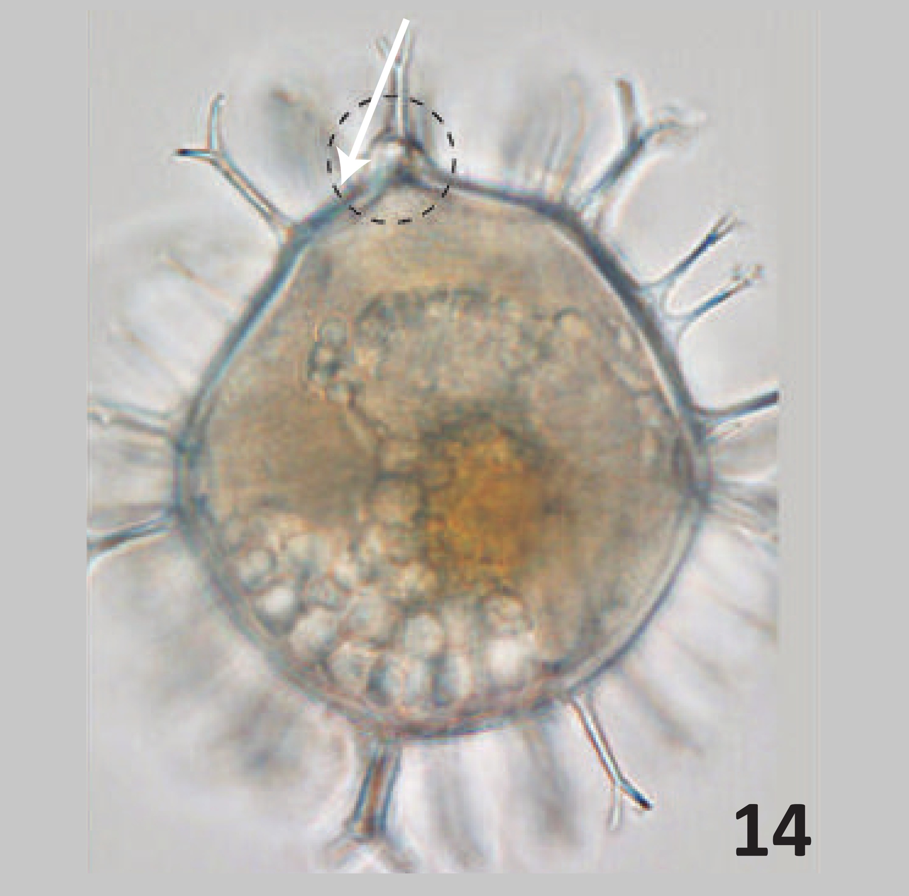</br>1</td>
                            <td>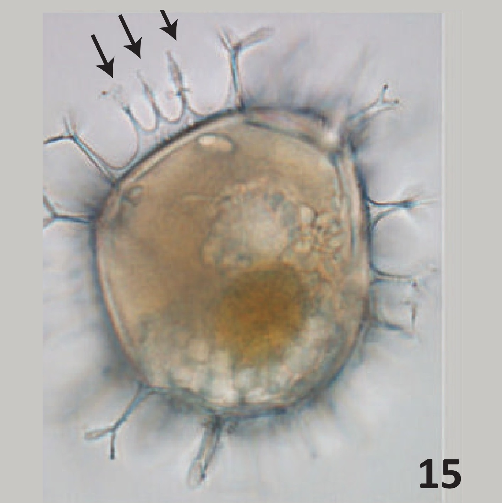</br>2</td>
                            <td>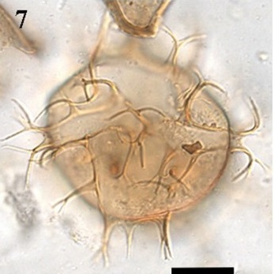</br>3</td>
                        </tr>
                        <tr>
                            <td>&nbsp;</td>
                        </tr>
                        <tr>
                            <td>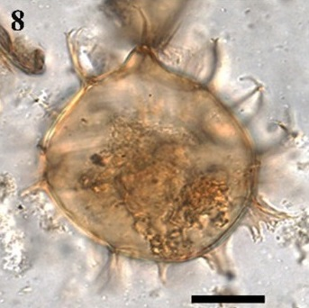</br>4</td>
                            <td>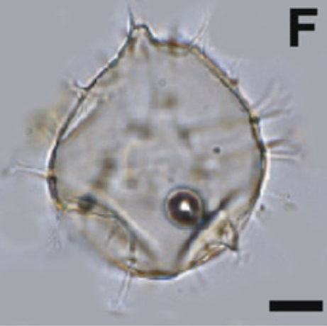</br>5</td>
                            <td>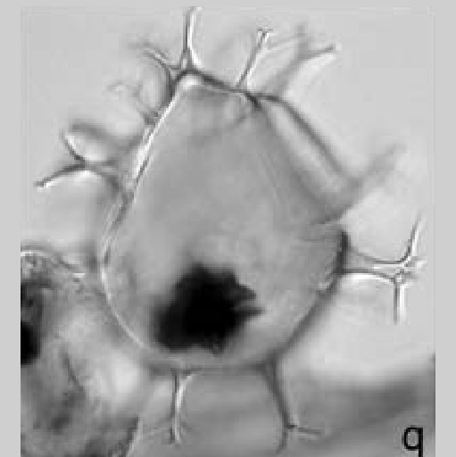</br>6</td>
                        </tr>
                        <tr>
                            <td>&nbsp;</td>
                        </tr>
                        <tr>
                            <td>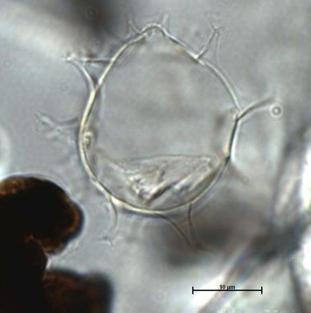</br>7</td>
                            <td>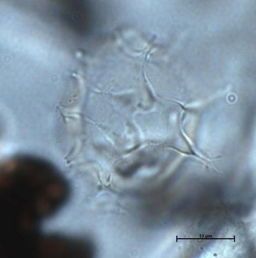</br>8</td>
                            <td>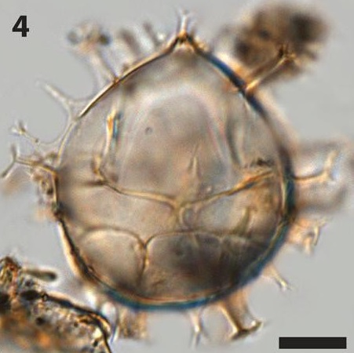</br>9</td>
                        </tr>
                        <tr>
                            <td>&nbsp;</td>
                        </tr>
                        <tr>
                            <td>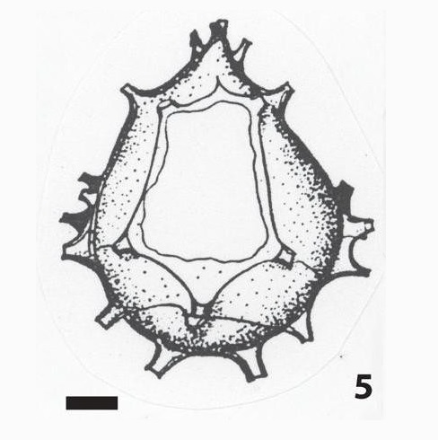</br>10</td>
                            <td>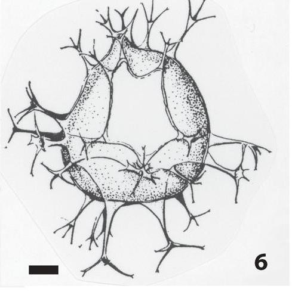</br>11</td>
                            <td></br>12</td>
                        </tr>
                        <tr>
                            <td>&nbsp;</td>
                        </tr>
                        <tr>
                            <td>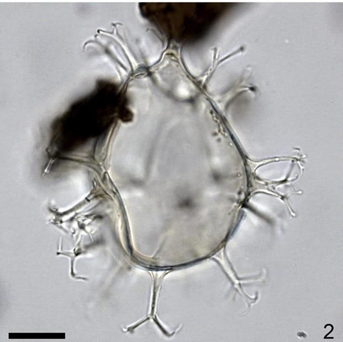</br>13</td>
                            <td>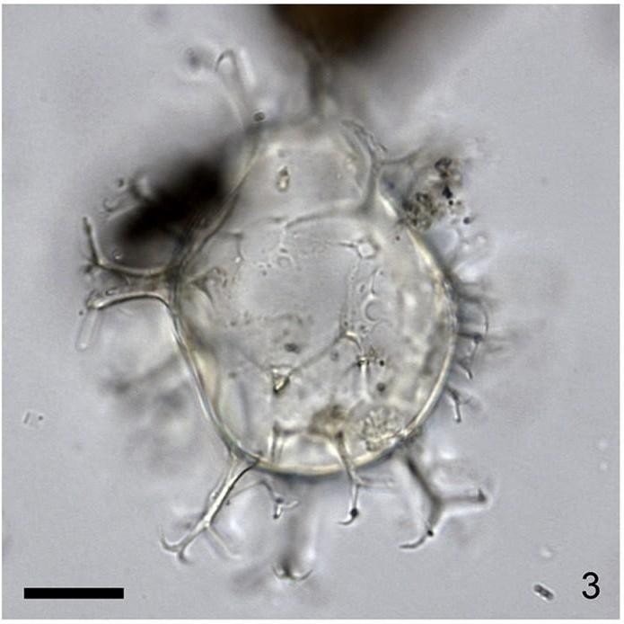</br>14</td>
                            <td>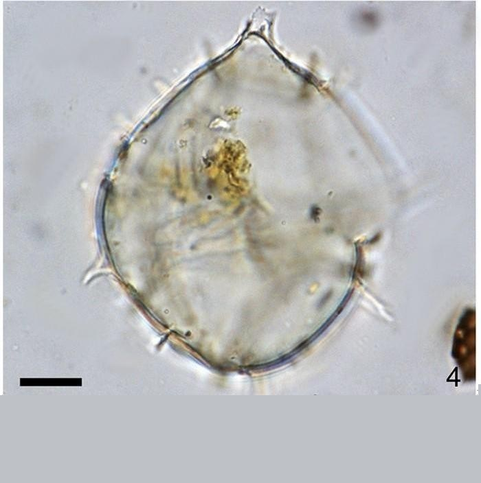</br>15</td>
                        </tr>
                        <tr>
                            <td>&nbsp;</td>
                        </tr>
                        <tr>
                            <td>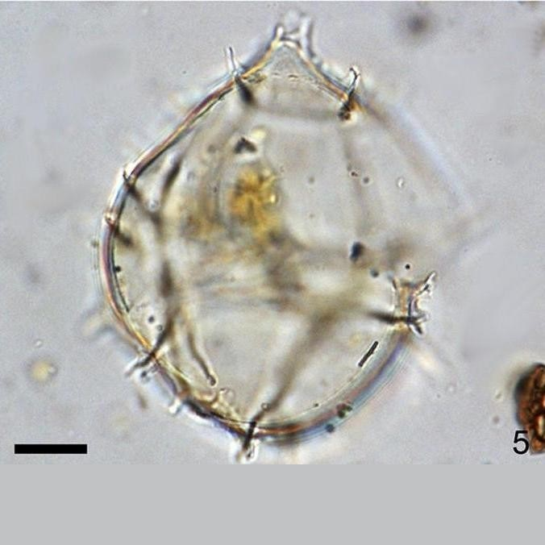</br>16</td>
                        </tr>
                    </table>
                    </br></br></br>

                    <p><strong>IMAGES REFERENCE:</strong></p></br>
                    <p><strong>1.</strong> <i>Spiniferites bentorii</i>. Different views of the same specimen showing intergonal processes. Note the typical pear-shaped central body and the well-developed apical protuberance (Limoges et al., 2018 - Plate 4-14).</p>
                    <p><strong>2.</strong> <i>Spiniferites bentorii</i>. Different views of the same specimen showing intergonal processes. Note the typical pear-shaped central body and the well-developed apical protuberance (Limoges et al., 2018 - Plate 4-15).</p>
                    <p><strong>3.</strong> <i>Spiniferites bentorii</i>. Micrographs of selected dinocyst taxa. Lower focal levels. Scale bar: 10 um. (Cuéllar et al., 2018).</p>
                    <p><strong>4.</strong> <i>Spiniferites bentorii</i>. Micrographs of selected dinocyst taxa. Upper focal levels. Scale bar: 10 um. (Cuéllar et al., 2018).</p>
                    <p><strong>5.</strong> <i>Spiniferites bentorii</i>. Bright field photomicrographs of selected dinoflagellate cysts found in surface sediments from southern South Korea. Scale bar: 10 um. (Pospelova et al., 2010 - Plate 1-F).</p>
                    <p><strong>6.</strong> <i>Spiniferites bentorii</i>. Dinoflagellate cysts from the Verrebroek Dock (VBD) and Deurganck Dock (DGD) sections. Left lateral view at mid focus; CBL:53 um., sample VBD 2.6 pl, W40/0 (Louwye et al., 2004 - Figure 7-q).</p>
                    <p><strong>7.</strong> <i>Spiniferites bentorii</i>. MARUM. Dorsal view.</p>
                    <p><strong>8.</strong> <i>Spiniferites bentorii</i>. MARUM. Ventral view.</p>
                    <p><strong>9.</strong> <i>Spiniferites bentorii</i>. Optical microscopy. CBL: 45 um. (de Vernal, 2018 - Plate 2-4).</p>
                    <p><strong>10.</strong> <i>Spiniferites bentorii</i>. Andoriginal drawings of the typespecies from the Mediterranean Sea. CBL: 60 um. (de Vernal, 2018 - Plate 2-5).</p>
                    <p><strong>11.</strong> <i>Spiniferites bentorii</i>. Andoriginal drawings of the typespecies from the Mediterranean Sea. CBL: 60 um. (de Vernal, 2018 - Plate 2-6).</p>
                    <p><strong>12.</strong> <i>Spiniferites bentorii</i>. High to low focus, right lateral view of specimen with long processes from the Mediterranean Sea (core MS21 pc643-644). Scale bar: 10 um. (Van Nieuwenhove et al., 2020).</p>
                    <p><strong>13.</strong> <i>Spiniferites bentorii</i>. High to low focus, right lateral view of specimen with long processes from the Mediterranean Sea (core MS21 pc643-644). Scale bar: 10 um. (Van Nieuwenhove et al., 2020).</p>
                    <p><strong>14.</strong> <i>Spiniferites bentorii</i>. High to low focus, right lateral view of specimen with long processes from the Mediterranean Sea (core MS21 pc643-644). Scale bar: 10 um. (Van Nieuwenhove et al., 2020).</p>
                    <p><strong>15.</strong> <i>Spiniferites bentorii</i>. Specimen with reduced processes from the eastern Pacific Ocean. Scale bar: 10 um. (Van Nieuwenhove et al., 2020).</p>
                    <p><strong>16.</strong> <i>Spiniferites bentorii</i>. Specimen with reduced processes from the eastern Pacific Ocean. Scale bar: 10 um. (Van Nieuwenhove et al., 2020).</p>
                    </br></br></br>

                    <p><strong>BIBLIOGRAPHY:</strong></p></br>
                    <p> - Cuéllar-Martinez, T., Alonso-Rodríguez, R., Ruiz-Fernández, A. C., de Vernal, A., Morquecho, L., Limoges, A., ... & Sanchez-Cabeza, J. A. (2018). Environmental forcing on the flux of organic-walled dinoflagellate cysts in recent sediments from a subtropical lagoon in the Gulf of California. Science of The Total Environment, 621, 548-557.</p></br>
                    <p> - de Vernal, A., Eynaud, F., Henry, M., Limoges, A., Londeix, L., Matthiessen, J., ... & Van Nieuwenhove, N. (2018). Distribution and (palaeo) ecological affinities of the main Spiniferites taxa in the mid-high latitudes of the Northern Hemisphere. Palynology, 42(sup1), 182-202.</p></br>
                    <p> - Limoges, A., Londeix, L., Mertens, K. N., Rochon, A., Pospelova, V., Cuéllar, T., & De Vernal, A. (2018). Identification key for Pliocene and Quaternary Spiniferites taxa bearing intergonal processes based on observations from estuarine and coastal environments. Palynology, 42(0), 72-88.</p></br>
                    <p> - Louwye, S., Head, M. J., & de Schepper, S. (2004). Dinoflagellate cyst stratigraphy and palaeoecology of the Pliocene in northern Belgium, southern North Sea Basin. Geological Magazine, 141(3), 353-378.</p></br>
                    <p> - Mertens, K. N., Van Nieuwenhove, N., Gurdebeke, P. R., Aydin, H., Bogus, K., Bringué, M., ... & Grothe, A. (2018). The dinoflagellate cyst genera Achomosphaera Evitt 1963 and Spiniferites Mantell 1850 in Pliocene to modern sediments: a summary of round table discussions. Palynology, 42(sup1), 10-44. (**)</p></br>        
                    <p> - Pospelova, V., & Kim, S. J. (2010). Dinoflagellate cysts in recent estuarine sediments from aquaculture sites of southern South Korea. Marine Micropaleontology, 76(1-2), 37-51.</p></br>
                    <p> - Van Nieuwenhove, N., Head, M. J., Limoges, A., Pospelova, V., Mertens, K. N., Matthiessen, J., ... & Rochon, A. (2020). An overview and brief description of common marine organic-walled dinoflagellate cyst taxa occurring in surface sediments of the Northern Hemisphere. Marine Micropaleontology, 159, 101814.</p></br>
                    <p> - Zonneveld, K. A., & Pospelova, V. (2015). A determination key for modern dinoflagellate cysts. Palynology, 39(3), 387-409. (*)</p></br>  
                </div>
            </div>
                
            <div id="lateral">
                <div id="color"></div>
                <div id="lateral_opciones">
                    <ul>
                        <li><a href="../quistes_transparentes.html">TRANSPARENT CYSTS</a></li>
                        <li><a href="../quistes_marrones.html">BROWN CYSTS</a></li>
                        <li><a href="../lista_quistes.html">CYSTS LIST</a></li>
                    </ul>
                </div>
            </div>
            <footer id="pie">
                <p>Made by @TechRooster</p>
            </footer>
        </div>
    </div>
</body>
</html>


